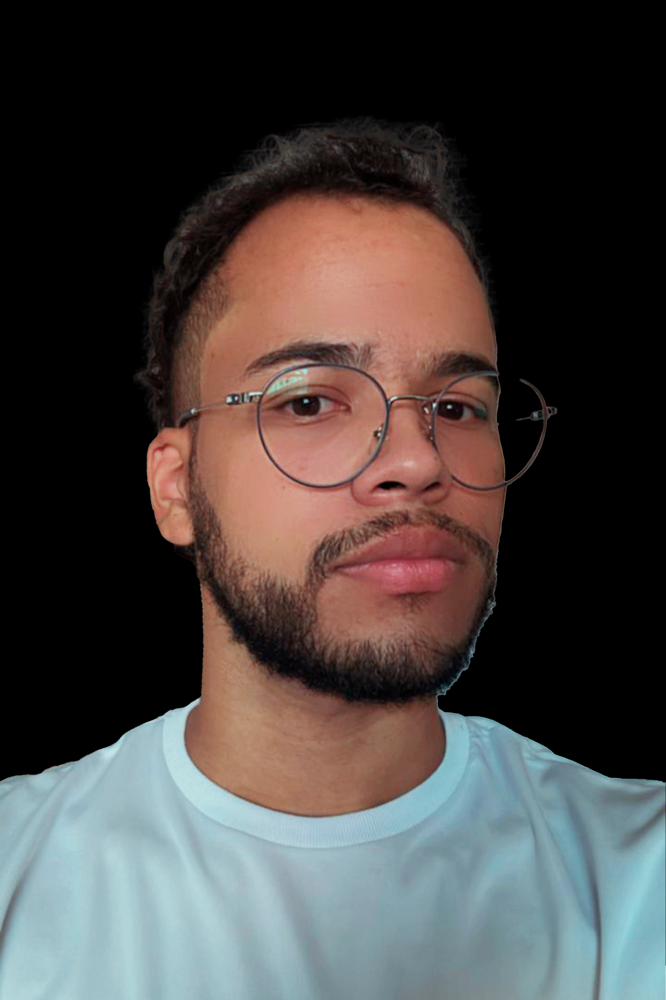

Olá, me chamo Kaiky
Eu sou um UI/UX Designer
Com 1 ano de experiência no desenvolvimento de interfaces e experiências digitais centradas no usuário, meu foco é transformar ideias em soluções visuais intuitivas e funcionais. Desde a prototipagem inicial até o design final, utilizo as melhores práticas de design para criar produtos que não apenas atendem às necessidades do usuário, mas também proporcionam uma experiência envolvente.
Me contrate
Sobre Mim
Eu sou Kaiky e UI/UX Designer
Sou formado em técnico em desenvolvimento de sistemas e tenho 2 anos de experiência como UI/UX designer. Com um sólido conhecimento em ferramentas como Figma, Photoshop, Adobe XD, HTML e CSS, desenvolvo soluções visuais e funcionais que conectam criatividade e tecnologia. Ao longo da minha trajetória, participei de diversos projetos que aprimoraram minha habilidade de transformar ideias em interfaces atraentes e fáceis de usar. Minha abordagem foca na criação de experiências centradas no usuário, com designs otimizados para oferecer praticidade e uma excelente usabilidade
Aniversário : 12/07/2004
Idade : 20
Website: : www.meu.com
Email: : botelhokaiky55@gmail.com
Cidade: : Guará - SP
Freelancer : Disponível
FIGMA
PHOTOSHOP
ADOBE XD
HTML
CSS
Educação
2024 - 2025
Técnico em desenvolvimento de Sistemas
SENAI Márcio Bargueira Leal
Atualmente, estou cursando Técnico em Desenvolvimento de Sistemas pelo SENAI, com foco em desenvolvimento front-end. Durante o curso, venho aprofundando meus conhecimentos em HTML, CSS e Figma, o que me permite criar interfaces visualmente atraentes e intuitivas. Além disso, aprendi fundamentos de Node.js, expandindo minha visão sobre as tecnologias utilizadas na construção de aplicações interativas e centradas na experiência do usuário."
2023 - 2024
Técnico em desenvolvimento de Sistemas
ETEC Pedro Badran
Sou formado em Técnico de Desenvolvimento de Sistemas, onde adquiri uma base sólida em tecnologias como HTML, CSS e ferramentas de design como o Figma. Durante o curso, desenvolvi projetos práticos que me permitiram aplicar conhecimentos de front-end, criação de interfaces e design visual, aprimorando minha capacidade de transformar ideias em soluções digitais intuitivas e funcionais.
2020 - 2022
Ensino Médio
ETEC Professor José Ignácio Azevedo Filho
Concluí o Ensino Médio com um sólido embasamento em disciplinas essenciais e foco no desenvolvimento de habilidades analíticas e de comunicação. Essa etapa foi fundamental para consolidar minha responsabilidade, organização e dedicação, qualidades que trago comigo em cada projeto e que complementam minha formação técnica e prática.
Experiência
2024 - 2024
TCC Next Book
O Next Book é um aplicativo para compra e venda de livros novos e usados, com foco em acessibilidade e sustentabilidade. Para a criação da interface, foram utilizados Figma e Photoshop, o que permitiu desenvolver uma experiência de usuário intuitiva, onde é possível explorar categorias, visualizar detalhes e acompanhar a entrega dos pedidos.
2023 - 2023
Smart Lux: Projeto da Competição Tige
OO Smart Lux foi desenvolvido para a competição Tiges, focando na contratação de serviços elétricos. Utilizando o Figma, o aplicativo oferece uma interface intuitiva que permite aos usuários encontrar eletricistas, solicitar orçamentos. O projeto destaca-se pela sua abordagem centrada no usuário, promovendo uma experiência prática e eficiente para facilitar a conexão entre clientes e profissionais qualificados.